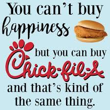
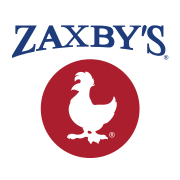
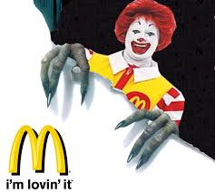

My 3 Favorite Fast Food Places To Eat At:
Here are my favorite places to get fast food and why I think them. Yes, my back is very big.
1. Chick-fil-a

Chick-fil-a comes at number one because it in my opinion has the best quality food you'll ever get. Not only that, but the customer service is stellar and they always make you feel welcome. I dont remember a time when I got chick-fil-a and I didn't like the meal. My favorite meal from Chick-fil-a is a chicken sandwich with fries and mac n cheese. It's very yummy :) and I recommend trying. :))))))))
2. Zaxbys

Zaxbys comes second because, boy oh boy their wings are good. Not only that but the toast as well as the chicken fingers are not something to play with. The fries are perfectly seasoned, and dont even get me started with the zax sauce. :))))))
McDonalds

McDonalds comes at third place because, well, do I really need to say why. Everybody likes McDonalds. Its a classic. You, your parents, and even your grandparents probably favorite fast food place was McDonalds. :))))))))))